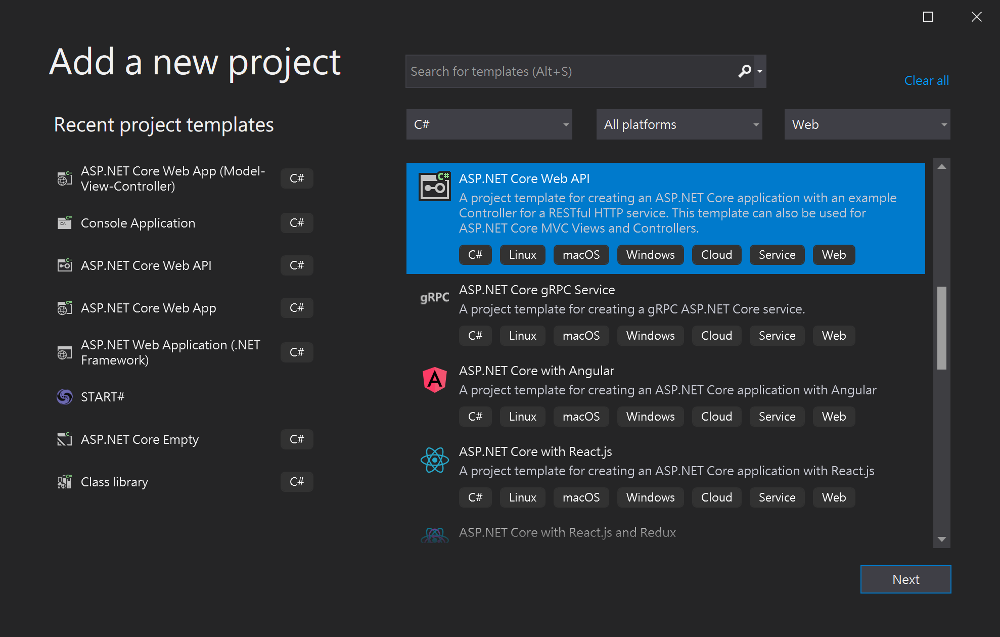
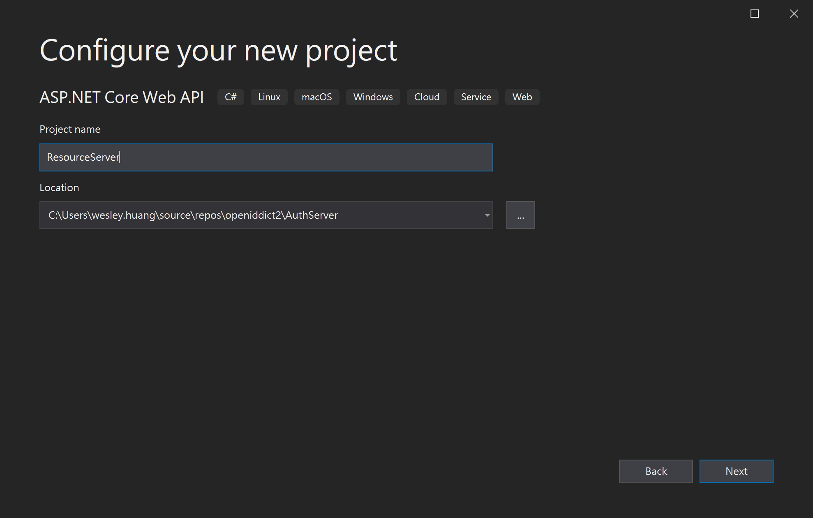
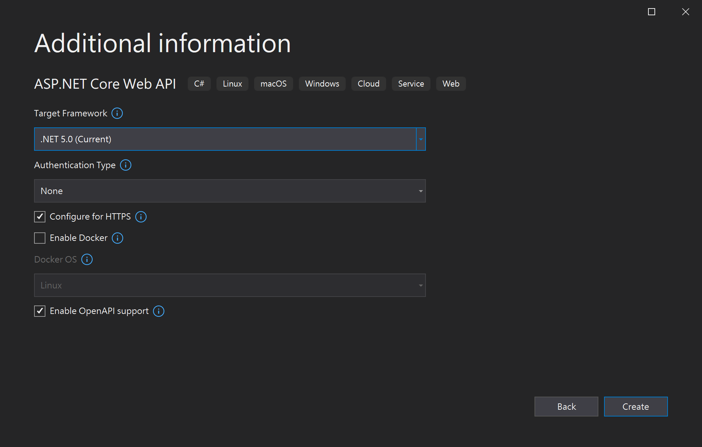
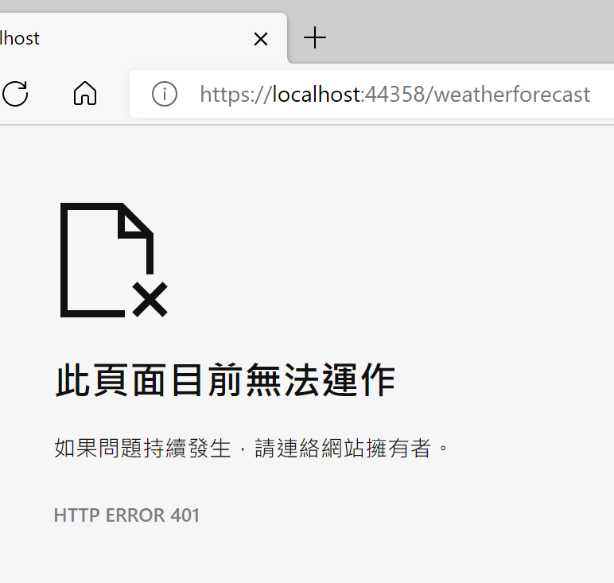
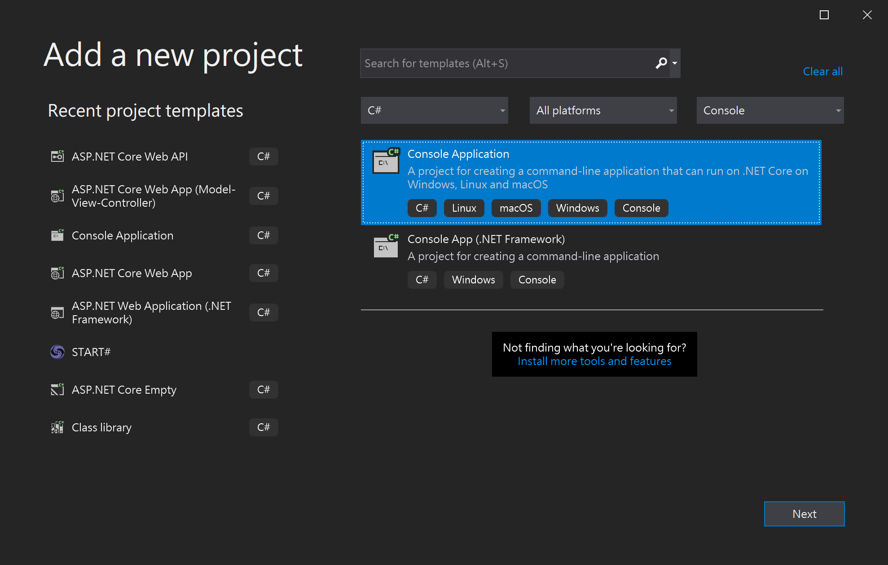
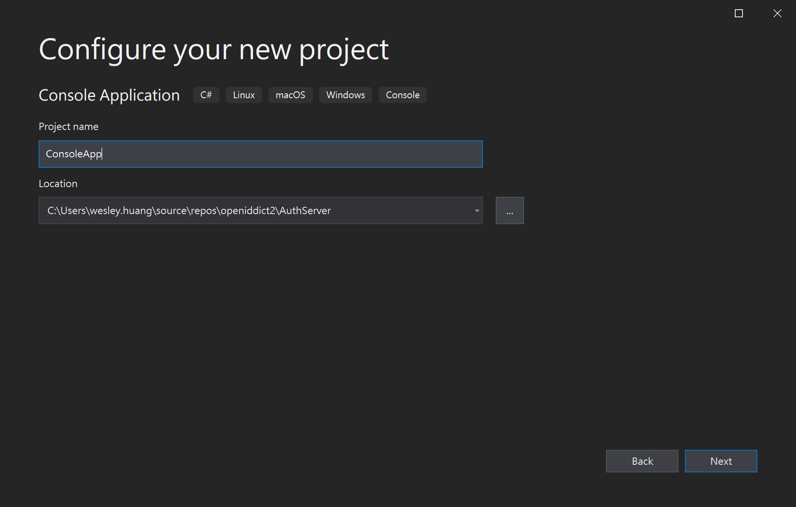
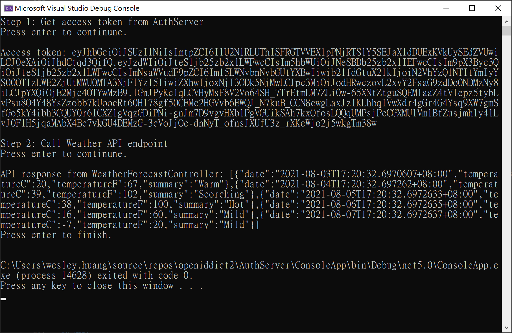

on
使用 OpenIddict 建立一個支援 Client Credentials Grant 的 Authentication Server 來保護你的 Web API - Part 2
本篇內容主要講解如何使用 OpenIddict 來建立一個支援 Client Credentials Grant 的 OAuth Authentication Server 來保護你的 Web API。
內容將會分成兩個部分，第一部分包含方案說明，以及建立 Authentication Server 專案，第二部分則會建立一個 Resource Server (Web API) 專案，及一個 Console App 作為 Client。
在第一部分中，我們已經建立好一個 AuthServer，在這部分，我們將會建立一個 Resource Server (Web API)及一個 Console App 作為 Client。
Resource Server
1. 開新 Web API 專案
首先，在方案中，新增一個 ASP.NET Core Web API專案，專案名稱為ResourceServer，Authentication Type 為 None。



專案建立完成後，直接執行專案，並透過瀏覽器，訪問 WeatherForecast endpoint
https://localhost:44358/WeatherForecast
port number可能會不同，請自行修改
可以得到下面結果
[{"date":"2021-08-03T16:38:41.6219178+08:00","temperatureC":23,"temperatureF":73,"summary":"Hot"},{"date":"2021-08-04T16:38:41.6219205+08:00","temperatureC":12,"temperatureF":53,"summary":"Scorching"},{"date":"2021-08-05T16:38:41.6219208+08:00","temperatureC":-17,"temperatureF":2,"summary":"Scorching"},{"date":"2021-08-06T16:38:41.6219209+08:00","temperatureC":26,"temperatureF":78,"summary":"Bracing"},{"date":"2021-08-07T16:38:41.6219211+08:00","temperatureC":11,"temperatureF":51,"summary":"Scorching"}]
2. 安裝 OpenIddict.Validation 套件
在這裡因為需要透過 AuthServer 的 introspection endpoint 驗證 access token，OpenIddict 已經將驗證的功能寫好了，我們只需要安裝相關套件並設定就可以使用。
需要安裝的套件如下：
- OpenIddict.Validation.AspNetCore 3.1.0
- OpenIddict.Validation.SystemNetHttp 3.1.0
版本編號為撰文當下的最新版本
NuGet Package 安裝方式相信大家都很熟悉了，就不另外講解
3. 修改 Startup.cs
開啟 Startup.cs，並進行以下修改：
using OpenIddict.Validation.AspNetCore;
ConfigureServices
// 加入 Authentication，DefaultScheme 設定為 OpenIddict AuthenticationScheme
services.AddAuthentication(options =>
{
options.DefaultScheme = OpenIddictValidationAspNetCoreDefaults.AuthenticationScheme;
});
// 加入 OpenIddict validation
services.AddOpenIddict()
.AddValidation(options =>
{
// AuthServer 網址
options.SetIssuer("https://localhost:44337/");
// 使用前篇設定 introspection 的 clientid/clientsecret
options.UseIntrospection()
.SetClientId("resource_server")
.SetClientSecret("846B62D0-DEF9-4215-A99D-86E6B8DAB342");
options.UseSystemNetHttp();
options.UseAspNetCore();
});
services.AddControllers();
// 加入 Authorization
services.AddAuthorization();
Configure 區段，需要在app.UseRouting()後面，加上
app.UseAuthentication();
4. 修改 WeatherForecastController.cs
接著需要修改 WeatherForecastController，在Get method上面加上 AuthorizeAttribute
using Microsoft.AspNetCore.Authorization;
using OpenIddict.Validation.AspNetCore;
[HttpGet]
//加入下面這行
[Authorize(AuthenticationSchemes = OpenIddictValidationAspNetCoreDefaults.AuthenticationScheme)]
public IEnumerable<WeatherForecast> Get()
{
// ... 省略
}
5. 執行專案並測試
再完成前面的修改後，再次執行專案，並透過瀏覽器，訪問 WeatherForecast endpoint
https://localhost:44358/WeatherForecast
port number可能會不同，請自行修改
這時候你會看到應該是錯誤頁面，HTTP CODE 為 401 Unauthorized

這樣就表示我們的 Weatherforecast endpoint 需要有 access token 才能存取。
Resource Server 專案算是告一段落。
Console App
再來，我們要新增一個 Console App 作為 Client 來測試 AuthServer 取得 access token，並呼叫 Resource Server取得資源。
1. 開新 Console Application 專案
在方案中，新增一個 Console Application 專案，專案名稱為 ConsoleApp。
 
2. 安裝 OpenIddict.Abstractions 套件
這個步驟需要安裝 OpenIddict.Abstractions 3.1.0 這個 NuGet 套件
版本編號為撰文當下的最新版本
NuGet package 安裝方式相信大家都很熟悉了，就不另外講解
3. 修改 Program.cs
打開 Program.cs，並修改成下面的程式碼。
using OpenIddict.Abstractions;
using System;
using System.Collections.Generic;
using System.Net.Http;
using System.Net.Http.Headers;
using System.Net.Http.Json;
using System.Text;
using System.Threading.Tasks;
namespace ConsoleApp
{
class Program
{
static async Task Main(string[] args)
{
Console.WriteLine("Step 1: Get access token from AuthServer");
Console.WriteLine("Press enter to continune.");
Console.ReadLine();
using var client = new HttpClient();
var token = string.Empty;
try
{
//取得Access Token
token = await GetTokenAsync(client);
Console.WriteLine("Access token: {0}", token);
Console.WriteLine();
}
catch (HttpRequestException exception)
{
Console.WriteLine(BuildExceptionMessage(exception));
}
Console.WriteLine("Step 2: Call Weather API endpoint");
Console.WriteLine("Press enter to continune.");
Console.ReadLine();
try
{
//呼叫 Weather API
var resource = await GetResourceAsync(client, token);
Console.WriteLine("API response from WeatherForecastController: {0}", resource);
}
catch (HttpRequestException exception)
{
Console.WriteLine(BuildExceptionMessage(exception));
}
Console.WriteLine("Press enter to finish.");
Console.ReadLine();
}
private static string BuildExceptionMessage(HttpRequestException exception)
{
var builder = new StringBuilder();
builder.AppendLine("+++++++++++++++++++++");
builder.AppendLine(exception.Message);
builder.AppendLine(exception.InnerException?.Message);
builder.AppendLine("+++++++++++++++++++++");
return builder.ToString();
}
// 取得 access token
public static async Task<string> GetTokenAsync(HttpClient client)
{
// POST token endpoint
var request = new HttpRequestMessage(HttpMethod.Post, "https://localhost:44337/connect/token");
// 指定用戶端認證方式為 client credentials
// 設定 clientid/clientsecret
request.Content = new FormUrlEncodedContent(new Dictionary<string, string>
{
["grant_type"] = "client_credentials",
["client_id"] = "my-console-app",
["client_secret"] = "388D45FA-B36B-4988-BA59-B187D329C207"
});
var response = await client.SendAsync(request, HttpCompletionOption.ResponseContentRead);
var payload = await response.Content.ReadFromJsonAsync<OpenIddictResponse>();
if (!string.IsNullOrEmpty(payload.Error))
{
throw new InvalidOperationException("An error occurred while retrieving an access token.");
}
// 將取得的 access token 回傳
return payload.AccessToken;
}
// 呼叫 Resource Server weatherforecast endpoint
public static async Task<string> GetResourceAsync(HttpClient client, string token)
{
var request = new HttpRequestMessage(HttpMethod.Get, "https://localhost:44358/weatherforecast");
// 需帶入從 AuthServer 取得的 access token
request.Headers.Authorization = new AuthenticationHeaderValue("Bearer", token);
var response = await client.SendAsync(request, HttpCompletionOption.ResponseContentRead);
response.EnsureSuccessStatusCode();
return await response.Content.ReadAsStringAsync();
}
}
}
這樣我們就完成我們的 Client Console App 了。
整體測試
接下來進行測試，首先先將 AuthServer 及 Resource Server 執行起來。 確定都執行後，執行 ConsoleApp，並依照畫面指示操作，如果都正確無誤，你應該會看到下面的畫面。

結論
到目前為止，我們已經算是完成了既定的計畫，也就是建立了一個支援 Client Credentials Grant 的 Authentication Server，以及一個需要 Authentication Server 發出的 access token 才能存取的 Resource Server，另外，也完成了一個測試用的 Client Console App，可以透過觀察 Console 的輸出來了解整個流程。